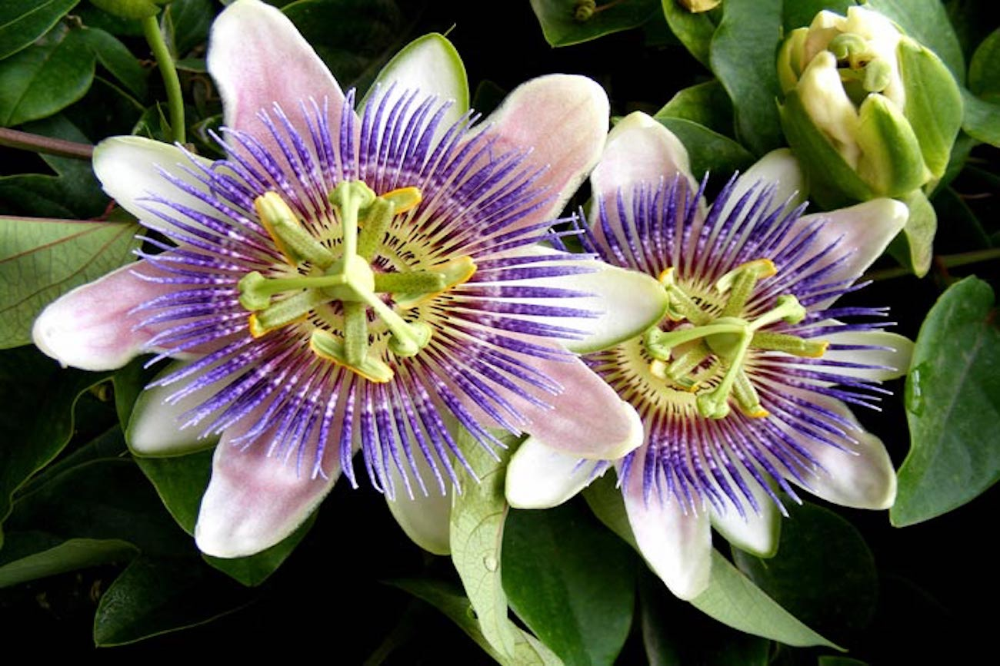

Pasiflora
Calma nerviosismo, ansiedad e insomnio, se consume en té, tintura o suplemento.
Sábila
Alivia quemaduras, heridas y fiebre, también se usa en cosmetología.

Malvilla
Con propiedades curativas y cosméticas, es útil en cremas, aceites y jabones.
Manzanilla
Calmante natural, ayuda con problemas digestivos, respiratorios y de la piel.
Tepezcohuite
Útil para quemaduras, heridas, granos y lavados externos para aliviar la comezón.